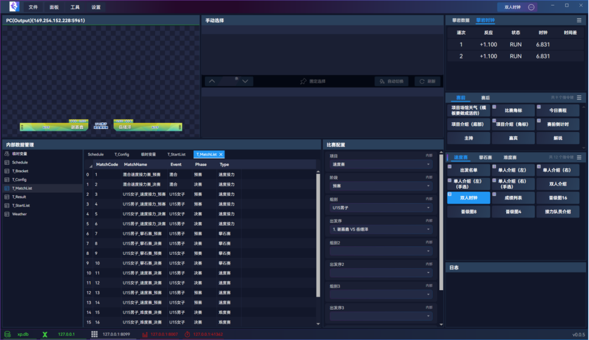
注册
电脑插上加密狗会自动注册，注册后程序右下角将不显示 未注册 标识。
未注册的程序，仅可进行基础操作，不能对外发起控制。
若使用过程拔掉加密狗，一般在 60s 内会自动改为 未注册 状态。
播出指令
可控制指令键进行预览、播上、播下、清屏、选择、翻页等
指令键播出
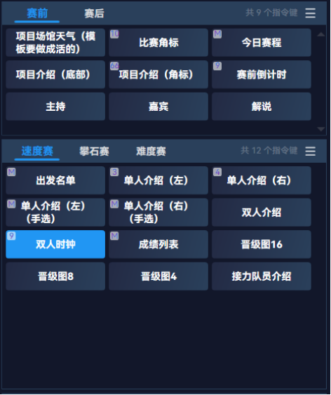
- 预览：鼠标点击选中，选中即预览
- 播上：选中后按下
空格或F3可播出 - 播下：按下
Q或F4播下（Q键需要保持英文输入法） - 清屏：按下
ESC键可播下所有指令，紧急情况使用，平时用不到
注意当前播出中的指令，为防止数据错误更新，不会有预览。
理论上不按 空格 和 F3 的情况下，任何操作都不会上屏，可安全操作。
手动选择
有些指令需要手动选择或翻页，如今日赛程、单个奖牌等，在手动选择面板可进行选择或翻页。
- 如
单个奖牌需要根据直播进度，手动选择金、银、铜字幕 - 如
出发名单需要进行翻多页展现
选择时也会预览，按下 空格（或 F3）进行播出或翻页更新
自动切换可用于多页、固定间隔的情况下使用，很少会用到，手选一般更可控
播出记录
播出操作可在 工具->播出记录 中进行导出，可用于赛后分析统计
编辑指令键
右键单击指令键或指令区，可对指令键和指令区进行增加、修改、删除
添加指令区
右键单击指令键或指令区，点击菜单 添加指令区
每个指令区都是一个面板，添加后的指令区，在菜单 面板 -> 指令区 下可切换是否显示。
编辑指令区
右键单击指令键或指令区，点击菜单 重命名指令区 可对当前指令区进行重命名。
预设指令区无法重命名
删除指令区
右键单击指令键或指令区，点击菜单 删除指令区 可删除当前指令区。
删除指令区将同时删除其下所有指令！
预设指令区无法被删除
添加指令键
右键单击指令键或指令区，点击菜单 添加，可弹出指令键添加弹窗。
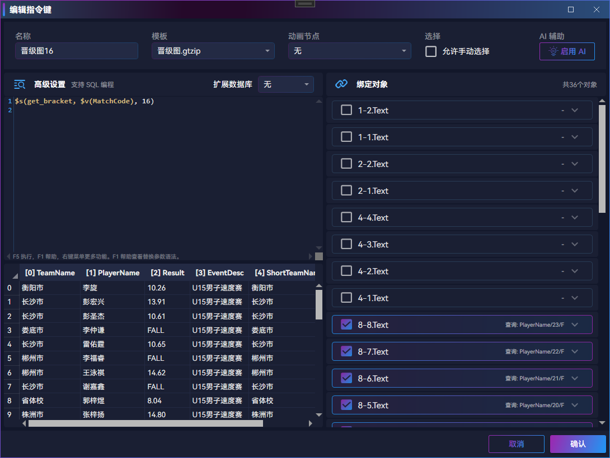
基础内容
- 名称：显示的指令键名称
- 模板：vMix、Xp 等输出模板
- 动画节点：用于动画，选择后该指令键在播出时会触发该动画
- 允许手动选择：打开后，改指令键的高级设置中查询结果，可在
手动选择面板中手动选择
AI 辅助
使用 AI 辅助写语句、配命令。
使用 AI 功能前，需在菜单 设置 -> AI 设置 中更换 AI 模型，默认的不够智能，用其他收费 AI 效果会更好。
在熟练使用软件前，不建议使用 AI 辅助。
高级设置
可使用 Sql 语句查询、处理数据。
查询语句可参考 查询语句管理
查询语句需要访问数据库，占资源较高，禁止在超高频字幕中使用，如 0.1s 及以下的时钟。
以下内容请参考 查询语句管理：
- 执行语句
- 复制真实语句
- 宏定义帮助
绑定对象
这里是绑定模板数据的核心部分
- 点击每项的勾选框，可开启或关闭这项数据对象的的绑定
- 点击每项的右侧区域，可展开或合并绑定内容
- 每项右侧区域，可直观看到当前绑定方式
绑定分为以下几类：
固定内容
可输入固定内容，适合模板中几乎不会变化的内容，如奖牌榜字幕的标题，值始终为 奖牌榜。
固定内容读取性能很高，能使用这类的尽量使用这类，可用于高频字幕。
内部数据
从内部数据取出数据绑定到模板中，需选择
- 表名：内部数据的表名
- 列名：内部数据表的列名
- 行号：第几行的数据，注意行号从0开始编号
内部数据读取性能中等，低频字幕可以使用，常规比赛 90% 以上都属于低频字幕。
查询结果
查询语句可参考 查询语句管理
顾名思义，是从查询结果中绑定的，即左侧高级设置的实时查询结果，需选择
- 列名：查询结果的列名
- 行号：第几行的数据，注意行号从0开始编号
- 选择：当打开
允许手动选择时可勾选此项，勾选后，会根据手动选择的数据动态绑定行号。
查询结果读取性能中等，低频字幕可以使用，常规比赛 90% 以上都属于低频字幕。
临时变量
从 内部数据管理 中的 临时变量 中取出数据绑定模板。
临时变量读取性能很高，能使用这类的尽量使用这类，可用于高频字幕。
高级编程
可使用 SQL 语句查询，支持多种宏定义，详见软件内的 F1 宏定义帮助。
查询语句需要访问数据库，占资源较高，禁止在超高频字幕中使用，如 0.1s 及以下的时钟。
快捷绑定
为防止误操作，快捷绑定一律是在按下键盘 Alt 的情况下才生效。
以下绑定类别支持快捷绑定：
- 内部数据：按住键盘 Alt 的同时，鼠标点击
内部数据管理下表中的单元格，可自动配置绑定。 - 查询结果：按住键盘 Alt 的同时，鼠标点击查询结果中的单元格，可自动配置绑定。
- 临时变量：按住键盘 Alt 的同时，鼠标点击
内部数据管理中的临时变量的单元格，可自动配置绑定。
绑定递增
如果绑定数据对象名称是按数字递增如
PlayerName1
PlayerName2
PlayerName3
或
Player1Name
Player2Name
Player3Name
则可使用绑定递增：
先配好一个数据对象，其他数据项保持关闭，在选中这个数据对象的前提下，按住键盘 Alt 的同时，鼠标勾选其他数据对象的选择框。
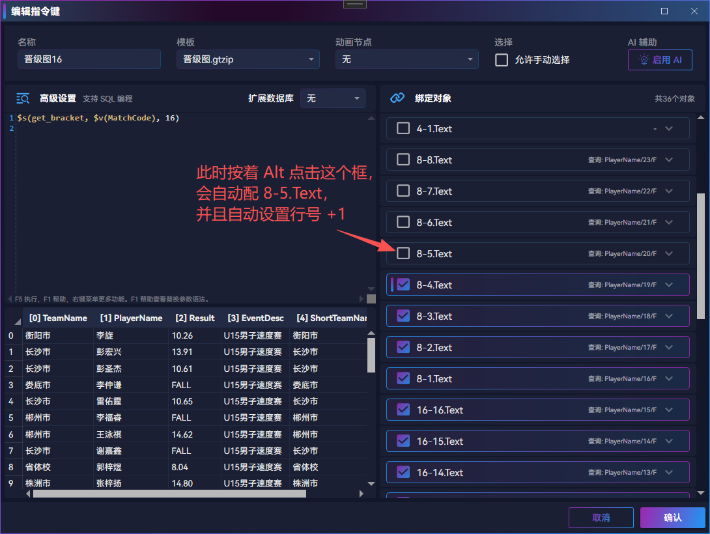
使用该功能，需规范命名模板中的数据项，能降低很多工作量。
编辑指令键
右键单击要编辑的指令键，点击菜单 编辑，可弹出指令键添加弹窗。
其他操作与前面 添加指令键 没有区别。
删除指令键
右键单击要删除的指令键，点击菜单 删除 可删除当前指令键。
修改层
右键单击要修改层的指令键，点击菜单 修改层 可删除当前指令键模板所属层。
层信息是模板的信息，因此修改指令键的层实质是修改模板的层，因此同模板的指令键层都会改变。
不同层的指令键可同时播出，同层会相互冲抵。
有的模板导入会覆盖自定义层修改，如 Xp 模板有层信息，导入模板时会以模板为准。
如 vMix 模板没有层信息，但若模板内有数据项命名为 t(<层>) ，如 t(0)、t(1)，则导入模板时以此层信息为准。
创建快照
右键单击要创建快照的指令键，点击菜单 创建快照 可创建一个新的指令键，该指令键所有数据对象都是 固定内容 类型。
因此创建的快照数据内容完全不会变化。
该功能用于临时保存指令键副本，一般用于备份、应急等情况。
如比赛结束我们还有颁奖字幕没播，此时数据来源端可能即将收设备，我们使用快照功能将奖牌榜进行快照留存，就不用依赖数据来源端了。
设置快捷键
右键单击要设置快捷键的指令键，点击菜单 设置快捷键 可为指令键设置自定义快捷键。
设置自定义快捷键后，按下快捷键可快速选中指令键。
该功能一般用于经常播出的字幕，如广告商、时钟等。
本地数据管理
本地数据用于:
内部数据管理面板中的表和内容比赛配置面板的配置- 指令键和指令区的配置
- 查询语句
- 等
本地数据配置
点击菜单 文件 -> 本地数据配置 可打开配置弹窗：
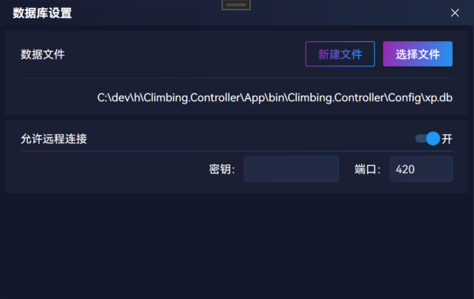
点击 选择文件 或 新建文件 按钮可切换本地数据，
切换数据后关闭弹窗会更新所有用到内部数据的内容。
打开 远程连接 开关后，可允许 navicat 数据库管理工具在局域网远程连接。
本地数据备份
点击菜单 文件 -> 本地数据备份 可打开配置弹窗：
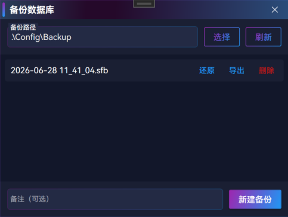
备份路径 用于存储、加载备份文件。
点击 新建备份 按钮可进行一次备份，备份的文件可用于还原，
一般进行危险操作前、或做出重大修改后，进行一次备份，确保数据安全。
本地数据表的操作
在 本地数据管理 面板中，可对内部表进行编辑、查看等操作。
本地数据表用于存放比赛数据、配置信息等，指令键可方便直接读取用于替换模板内容。
新建表
右键单击左侧列表区域，点击弹出菜单 新建表，在弹出对话框中，输入表名称、增加列
重命名表
右键单击左侧列表中要重命名的表，点击弹出菜单 重命名，在弹出对话框中，输入表名称
删除表
右键单击左侧列表中要删除的表，点击弹出菜单 删除表 并确认。
此操作不可恢复，不可撤销，谨慎操作。
编辑表结构（列）
编辑效果可随时撤销，在不重启软件的情况下，可放心编辑。
右键点击表内容、表头等区域，在右键菜单中有以下菜单可编辑表：
删除选中列：删除右键点击位置所在列新增一列：若点击位置是在某列中，则可在点击位置左侧、右侧增加列；否则可在最右侧增加列左侧增加列/右侧增加列：若点击位置是在某列中，会有此菜单新增一列：若点击位置不在列中，会有此菜单，如空白区域当前列左移、当前列右移：右键点击列，会有此菜单，可调整列位置（列的位置关系到查询结果，不能轻易调整）重命名列：右键点击列，会有此菜单，可修改列名（列名关系到查询结果，不能轻易调整）
编辑表内容（行）
编辑效果可随时撤销，在不重启软件的情况下，可放心编辑。
表内容可直接修改，实时保存，无需手动保存。
右键点击表内容、行头等区域，在右键菜单中有以下菜单可编辑表：
剪切、复制、粘贴：内容都是 csv 格式的，与 excel 剪切板互通清空内容：清除表中所有内容，不改变已有行、列，只是内容变空删除选中行：删除右键点击位置所在行会出现上面增加一行/下面增加一行：若点击位置是在某行中，会有此菜单新增一行：若点击位置不在行中，会有此菜单，如空白区域新增多行：可一次性批量增加指定多行
自适应粘贴
右键点击表内容，菜单有 自适应粘贴
自适应粘贴也是粘贴 csv 内容
但与 粘贴 不同的是，如果表中行列不足以放下内容，会自动增加行、列
例：
- 表有 3行 4列
- 复制的内容是 2行 3列
- 右键点击单元格在 2行 2列
此时用自适应粘贴，会自动增加 1行 和 1列
临时变量
在 本地数据管理 面板中，双击 临时变量 表，可打开临时变量。
临时变量主要是为了优化常用数据的读取性能，
在程序和查询语句中，使用临时变量表中的数据占用的资源很低，
编辑临时变量
临时变量会自动增加，但自动增加的不会保存，下次打开程序不会被加载。
如果手动增加临时变量，会保存下来，下次打开程序仍然有此临时变量
临时变量的值（Value）永远不会存储，关闭程序即丢失。
临时变量使用场景
一般使用场景：
- 高频更新字幕，如
时钟、比分等用到的值 - 比赛配置中，将选择的内容更新到临时变量
- 查询语句中的变量，配合比赛配置，可实现动态查询数据
- 外部接入的时钟、比分等常用内容，会写到临时变量，用于模板替换
查询语句管理
此功能需学习 Sqlite 的 SQL 语法
点击菜单 工具 -> 查询语句管理 即可打开查询语句管理弹窗。
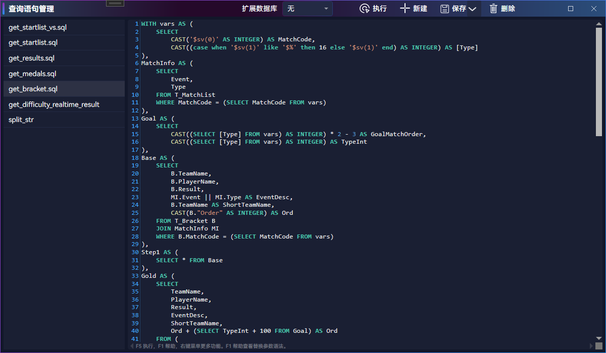
在这里可以对查询语句进行
- 新建：点击顶部
新建按钮，或右键点击左侧列表并点击菜单新建语句 - 删除：点击顶部
删除按钮，或右键点击左侧列表中的语句并点击弹出菜单删除语句 - 重命名：右键点击左侧列表中的语句并点击弹出菜单
重命名 - 导出：点击顶部
保存按钮右侧下拉小按钮，再点击弹出菜单导出，可导出为一个文件
查询语句可用于：
- 指令键高级设置查询数据
- 指令键绑定对象的
高级编程类型 - 比赛配置查询数据
- 比赛配置
更新到内部数据
执行语句
使用快捷键 F5 执行语句，或鼠标右键菜单点击执行。
复制真实语句
鼠标右键菜单点击 复制真实语句，可将真实查询语句复制到剪切板中，这将替换所有宏内容。
宏定义
所有查询语句和宏定义的区域，都支持快捷键 F1 查看当前支持的宏定义。
宏定义有多种写法，可用于动态替换：
- 临时变量
- 内部数据
- 查询语句
- 用查询结果替换
详细使用帮助可使用快捷键 F1 或鼠标右键菜单点击 宏定义帮助。
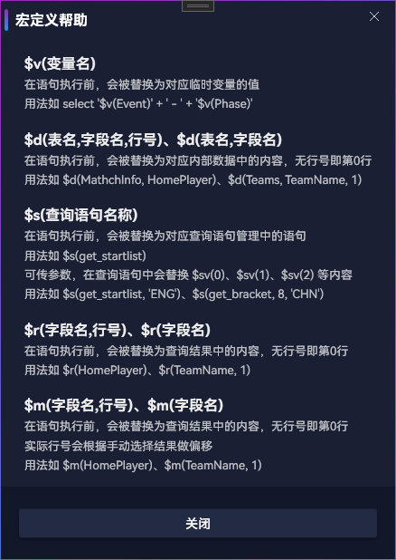
扩展数据库
大多数没有成绩处理的比赛，或成绩处理不让连数据库的情况，是用不到这个功能的
若选择 扩展数据库
查询的是内部数据，查询语句是 Sqlite 支持的 SQL 语句。
需要学习 Sqlite 的 SQL 语法，以及播控内支持的宏定义写法。
若选择 扩展数据库
查询的是对应扩展数据库，查询语句是对应数据库支持的 SQL 语句。
需要学习对应数据库的 SQL 语法，以及播控内支持的宏定义写法。
数据库来源
如比赛有成绩处理且提供数据库可控查询，则这里的扩展数据库可以是成绩处理的数据库，并且从成绩处理的数据库中查询数据。
播控 Ross Xp
连接配置
由于 Ross Xp 限制，只能对本机一台设备进行控制。
在程序左下角 X 标识的连接，灰色为未开启连接，红色为已开启连接但未成功，将一直尝试重新连接，绿色为已连接：
在 工具 -> Xp 连接管理 中可修改连接配置：
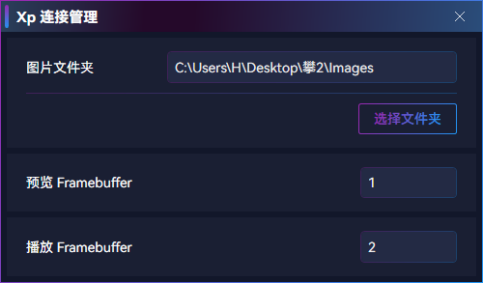
其中图片文件夹用于动态替换图片，如国旗、奖牌、运动员照片等（模板中的固定的图片可不放这里）。
预览/播出 Framebuffer 要与 Ross Xp 中保持一致
配置 Xp 预览
需在 Ross Xp 中创建一个 NDI 输出，用于预览。连接管理中的预览 Framebuffer 需与这个输出一致。
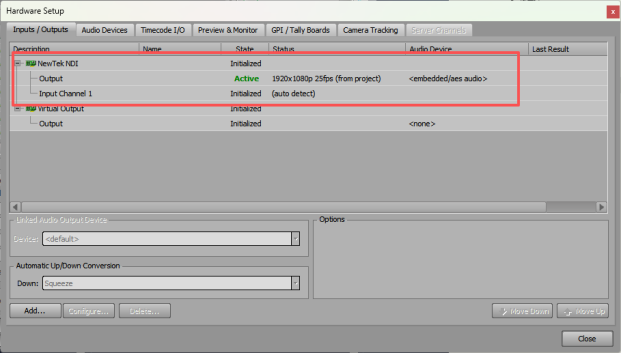
在播控中，菜单 工具 -> NDI 监控管理，可进行 NDI 预览的配置。点击 查看已检测连接 可快速添加已检测到的 NDI。
每个 NDI 连接，都是一个单独的面板，需自行拖拽排列位置。
配置 Xp 播出
Ross Xp 中的真实输出，连接管理中的播出 Framebuffer需与这个输出一致。
模板信息同步
在 Ross Xp 中的 Sequence 区域，点击 右键 -> Take Item List -> Export To，可导出一个 xml 文件。
在播控中，菜单 文件 -> 导入 Xp 模板 -> 选择文件，待 Loading 完成后即成功导入模板信息，导入后可进行指令的编辑、数据替换、播出控制。
当模板更新id、字段，或新增模板、删除模板后，需要进行一次模板信息同步，并且编辑指令更新数据的配置。
字段发布
在 Xp 的Layout 中，需要动态替换的文字、图片，需要打开发布“Public Object”。
文本需要同时勾选“Text”，图片（Quad）需要同时勾选“Material”。
在 Xp的Sequence中，Template Data 一律设为Static（默认选择，新模板可无视），否则播控无法替换。
播出层
播出层只能大于或等于0，不能小于0。建议 0-9，当然 10 以上也可。
常规大板可统一0层或1层，常挂模板如时钟、实时成绩等用其他层，不同层可同时播出。
播控 vMix
支持 vMix 版本 v26 及以上
连接配置
在 工具 -> vMix 连接管理 中可修改连接配置
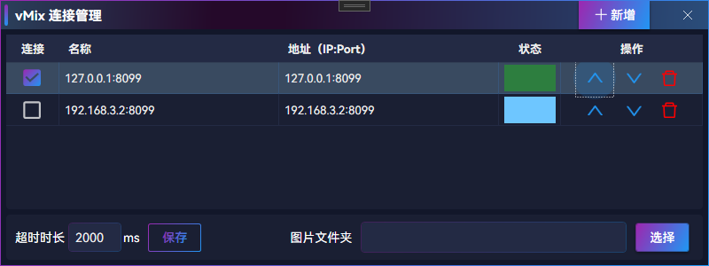
vMix 连接支持同时控制多个设备，每个设备都是一个单独的链接，多台设备需保证模板完全一致。
这里可对 vMix 连接进行增加、删除、修改。
在程序左下角 vMix 标识的连接，灰色为未开启连接，红色为已开启连接但未成功，将一直尝试重新连接，绿色为已连接：
图片文件夹用于动态替换图片，如国旗、奖牌、运动员照片等（模板中的固定的图片可不放这里）。
配置 vMix 预览
需在 vMix 中开启 NDI 输出，用于预览，
在 vMix 中打开 Settings -> Outputs / NDI / SRT，开启 Output，配置 Output（输出）或 Preview（预览）
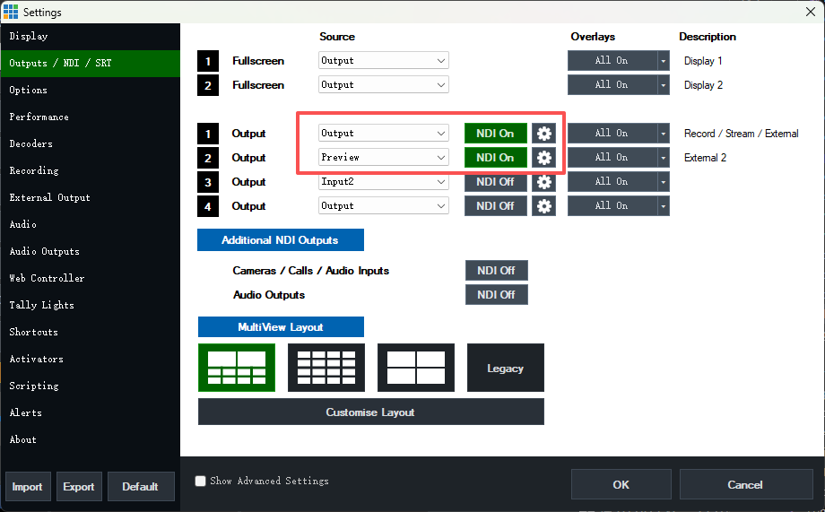
在播控中，菜单 工具 -> NDI 监控管理，可进行 NDI 预览的配置。点击 查看已检测连接 可快速添加已检测到的 NDI。
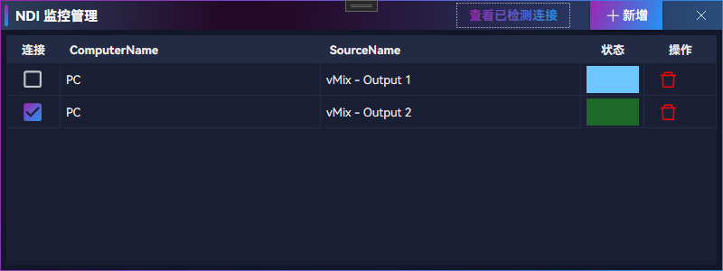
每个 NDI 连接，都是一个单独的面板，需自行拖拽排列位置。
模板信息同步
在连接 vMix 的状态下，点击播控中菜单 文件 -> 导入 vMix 模板，待 Loading 完成后即成功导入模板信息，导入后可进行指令的编辑、数据替换、播出控制。
当模板更新id、字段，或新增模板、删除模板后，需要进行一次模板信息同步，并且编辑指令更新数据的配置。
播出层
如果模板有定义数据项且命名为 $t(<层>) 如 $t(0)、$t(1) 等，则导入模板时将自动设置模板所属播出层。
播出层只能大于或等于0，不能小于0。
常规大板可统一2层（默认），常挂模板如时钟、实时成绩等用其他层，不同层可同时播出。
注意： 在 vMix 26 中，只支持 1-4 层，且1层用于预览，因此模板只能用 2-4 层。在 vMix 30 及以上可用 2-9 层。
模板要求与建议
模板复用
同样式的模板建议只做一个，如男子出发名单、女子出发名单、难度出发名单、速度出发名单等，只需做一个出发名单模板即可。
又如单人介绍、嘉宾介绍、裁判介绍等，若样式相同也可只做一个单人介绍模板。
数据替换完全由播控进行。
性能提升
时钟这种字幕频率很高，且获取很轻便，
实时成绩更新频率低，且相对查询耗时。
这两类字幕应该拆为两个模板制作，不能做到一起，
播控指令也分成两个播出，否则实时成绩查询慢会拖累时钟的更新。
攀岩比赛管理
赛前确认
赛前需确认有哪些比赛，和计时核对每场比赛的名称。
在内部数据管理面板，双击打开表 T_MatchList，可进行比赛编辑。
其中MatchCode 用于数据关联标识，自定义值但不能有重复的。
Event 是组别，一般值如男子、U15男子、女子、混合等。
Phase 是阶段，值为预赛、决赛。
Type 是比赛类型，值为攀石赛、速度赛、速度接力等。
在赛前需保证这张表内容准确完整，否则数据处理会有问题。
比赛配置
在“比赛配置”面板中，需选择当前比赛的项目、阶段、组别、出发序。
攀石和难度这种多组同时比的，根据同时比的组别数量，可以选择组别2、出发序2等，选择后可播出对应的指令。
接收时钟的端口，会根据当前选中的比赛类型自动切换。
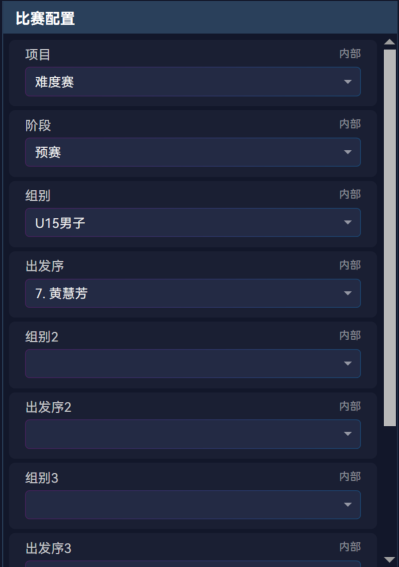
修改比赛配置
在比赛配置面板中，右键点击可进行编辑、新增、删除。
暂时用不到这个。
攀岩接收数据设置
在菜单 设置 -> 攀岩设置 弹窗中，可设置接收数据：
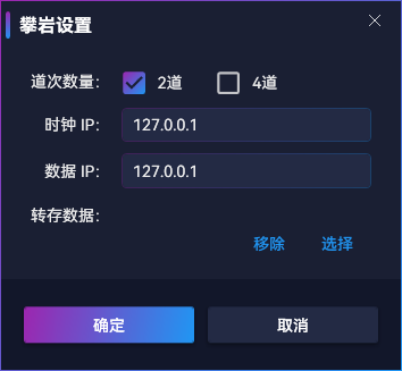
根据实际情况选择道次数量（这个会决定速度赛用 41362还是41363端口）。
设置 转存数据 后，收到的时钟、成绩等信息会写入 xml，这个现在已经用不到了。
在下方连接状态区域，可看到当前接收数据、时钟实际使用的 ip 和端口：
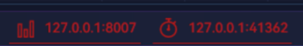
白色为未打开，红色为打开但未连接，将持续尝试连接，绿色为已连接。